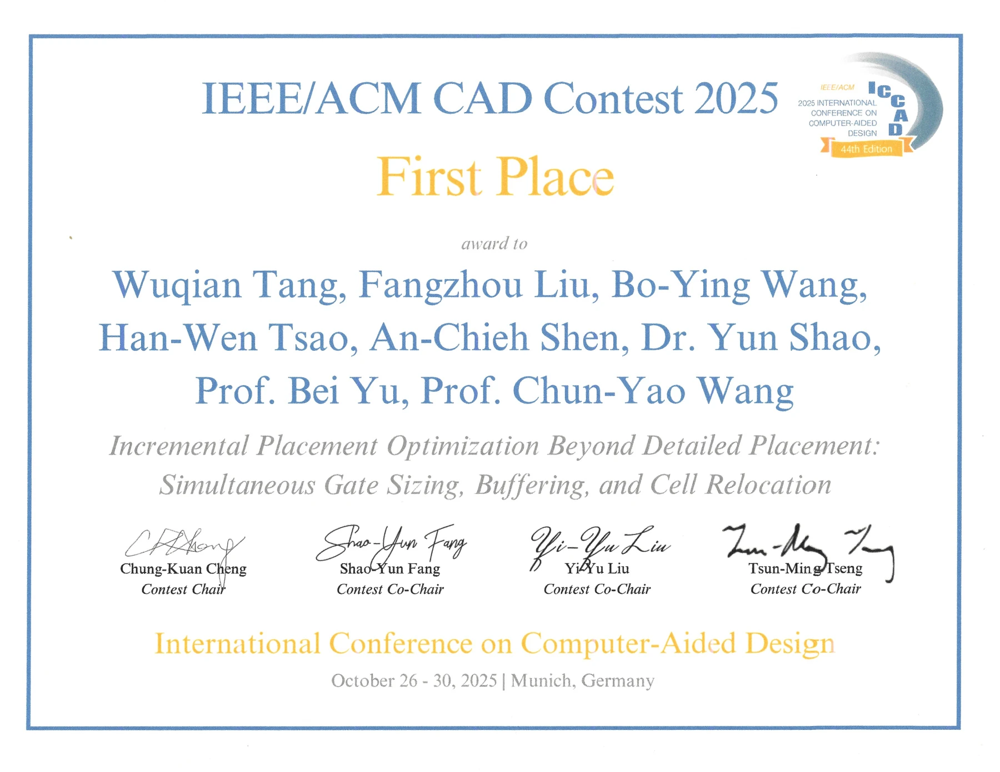
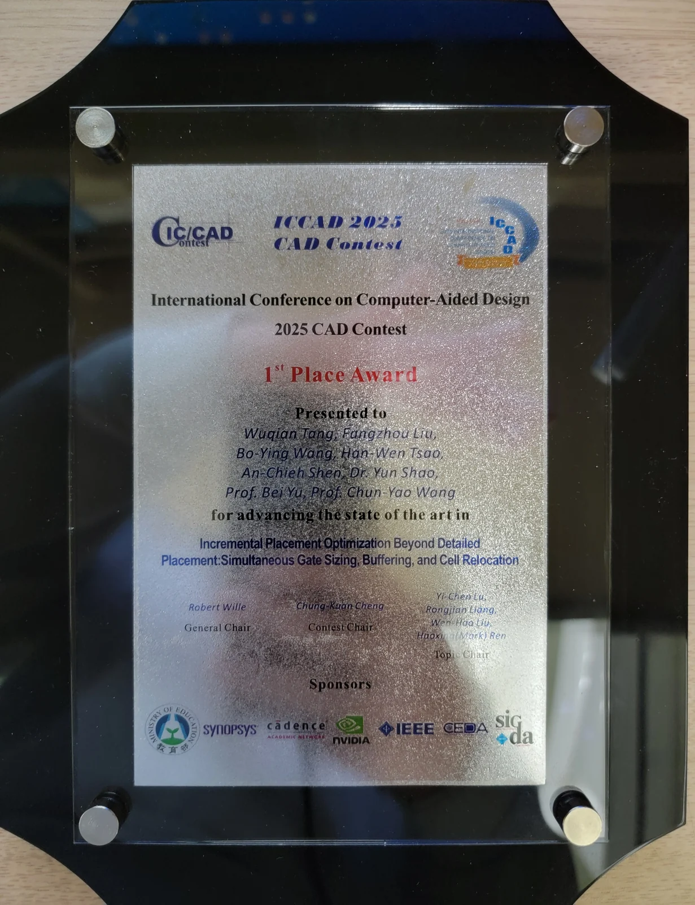
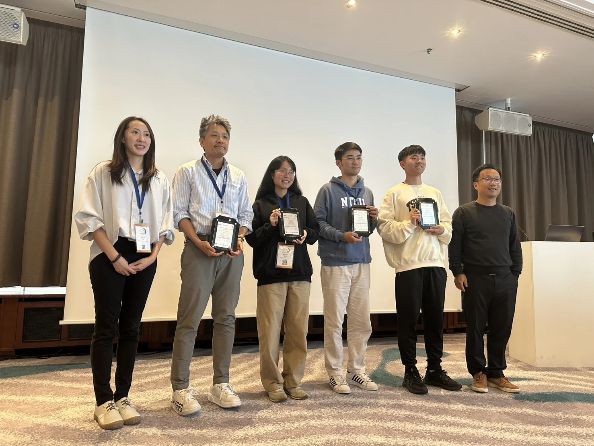
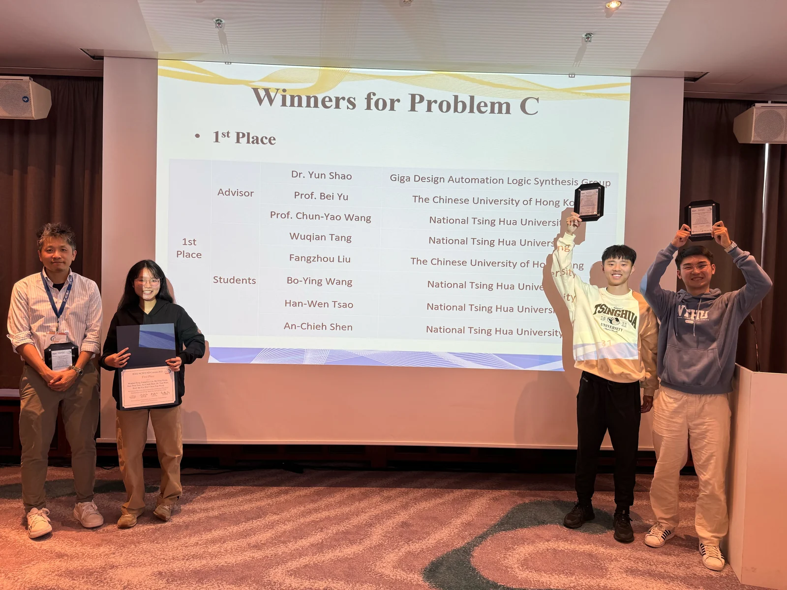

Awards & Honors · Oct 2025
First Place (Problem C), ICCAD CAD Contest
Incremental Placement Optimization Beyond Detailed Placement: Simultaneous Gate Sizing, Buffering, and Cell Relocation
Materials: [Certificate] [Plaque] [Photos] Announcements: [Official] [College] [Faculty] []
Certificates1

Plaques1

Photos2

